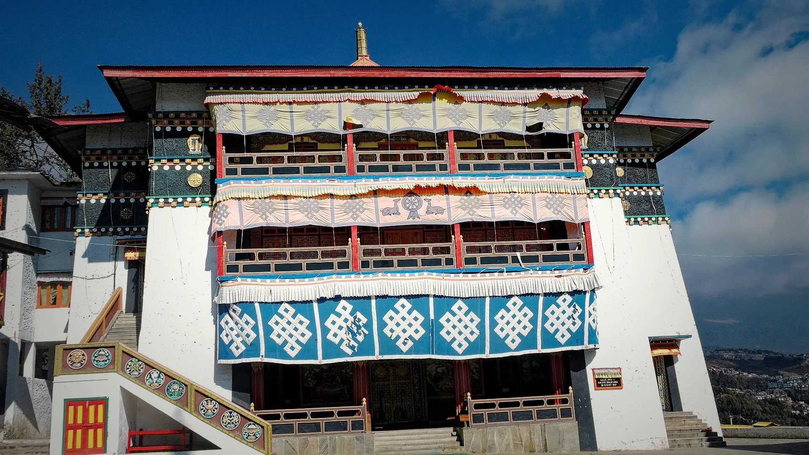

03Day 3 · Lagam · 2,700 mkm 0.1
The last road
55kmFrom Bomdila · By road
A 55 km drive from Bomdila ends at Lagam, the last motorable point, a village whose people graze yaks in the hills for months at a time.

Photo: Kingshuk Mondal, CC BY-SA 4.0· West Kameng–Tawang, Northeast
The trek in one line, and what you can do with it.
Bikat's Gorichen trek: six days on foot from the last road at Lagam to the Tawang valley.
8 stops on the map, then the climb. Scroll the stops and the map follows.
03Day 3 · Lagam · 2,700 mkm 0.1
55kmFrom Bomdila · By road
A 55 km drive from Bomdila ends at Lagam, the last motorable point, a village whose people graze yaks in the hills for months at a time.
03Day 3 · Thungri · 3,200 mkm 2.8
+500mGain · Through forest and streams
Up through forest and streams to camp at Thungri. The trail passes Monpa villages and oak and juniper forest.
04Day 4 · Changla · 3,760 mkm 9.4
ThickForest · All day
Through thick forest to Changla. Army bunkers from the 1962 war still stand along the way: Chinese troops took this trail from Tulung La to Thembang.
05Day 5 · Nyang · 4,500 mkm 26.9
~1,000mGain · A long day
Over Poshing La (3,950 m), steeply up to Pangi La (4,200 m), then a gradual walk through rhododendron forest to camp at Nyang, 4,500 m.
06Day 6 · Tse La · 4,980 mkm 28.2
4,980mAltitude · The high point
Tse La, 4,980 m, the highest point of the trek, with a revered alpine lake near the pass.
06Day 6 · Lurthim · 4,350 mkm 34.1
−630mDown · From Tse La
Down from the pass to camp at Lurthim, 4,350 m.
07Day 7 · Mago · 3,600 mkm 49.6
JungleWalk · A pleasant day down
A pleasant walk through jungle to Mago, 3,600 m, where camp is pitched among yak shelters.
08Day 8 · Thimbu Hydel · 3,200 mkm 61.8
Tawang ChuAlong · Over suspension bridges
The last walk follows the Tawang Chu over suspension bridges to Thimbu Hydel, then a drive via Jang reaches Tawang by early evening.
Best in Apr–Jun, Sep–Oct.
Dark: the months the trek’s sources call its best. Mid: possible. See all treks in April.
 Photo: Kingshuk Mondal, CC BY-SA 4.0
Photo: Kingshuk Mondal, CC BY-SA 4.0
Base prices from 2 operators’ own pages, per person. GST and travel are often extra. Treqz sells nothing.
The practical things, then the questions people ask.
One thing from each part of the packing list, so nothing big is missed. The full list, with where to rent and the daily rates, is on the 3D page.
The full packing list →


The network is patchy from Bomdila on, and gone from Lagam. Call home from Bomdila.
Bikat AdventuresThere is no electricity or phone network on the trail. Bring a power bank or solar charger.
UnExploredNorthEastBomdila has a decent choice of shops for last-minute buys. Don't leave anything important to the last minute.
Bikat AdventuresDays 13–18 °C, nights 0–7 °C, colder as you climb. Expect snow in the April–June season, little in September–October.
Bikat AdventuresTents for two or three, with a pit toilet tent at each camp. There is no bathing on the trek.
Bikat AdventuresAbout 61.8 km of walking over 10 days on the trail.
The highest point is 4,980 m, about 2,170 m above the start.
Its sources grade it Hard.
Apr–Jun, Sep–Oct.
₹23,999 to ₹51,250 per person: base prices from 2 operators' own pages. GST and travel are often extra.
The network is patchy from Bomdila on, and gone from Lagam. Call home from Bomdila.
Banzaras starts at Bomdila at 1 p.m.; the drive from Guwahati or Tezpur is extra. Weather buffer days cost about ₹3,000 a day.
There are no ATMs on the trek. Carry cash for your own expenses.
Thermals, top and bottom, Warm base layers, Fleece or down jacket, Waterproof jacket and pants, Quick-dry track pants ×2, Warm gloves, warm hat, sun hat, High-ankle trek boots, Wool socks. The full list is on the 3D page.
Its sources do not list December to February as a trekking season.
Its sources grade it Hard and it takes 10 days on the trail, with a highest point of 4,980 m.
David Scott Trail, Nongriat root bridges, Dzükou Valley, Green Lake, Dzongri.


Treks in April · Treks in May · Treks in June · Treks in September · Treks in Northeast India · High-Altitude Treks in India (Above 4,500 m) · Highest Treks in India · Longest Treks in India · Toughest Treks in India · Free trek finder · All treks in 3D